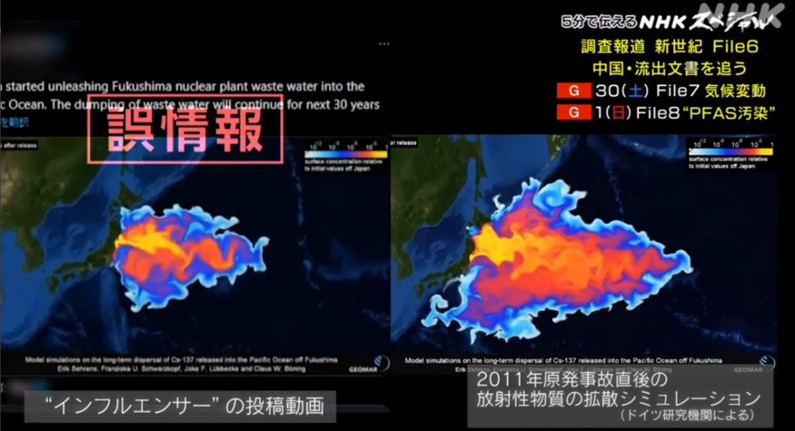

・ あの人に会いたい - 宇沢弘文
■ 今回 12/23 の主題一覧
・ 全体を通して
・ 原子力発電
・ 気候変動
・ 歴史認識（含経済学的視点）
■ 全体を通して
・ 一般論としての、効率的な合意形成（または誤解回避）の方法
・ 敏感な問題（※）に対する客観性確保の方法
※ ここでは、人の注意や反感を引き起こしやすい問題などを指す。
・ 究極の目的が不明な（自分のことしか考えない？）、意図的な情報操作
■ 原子力発電
・ 本荘さんのメールからの問題意識と対応する参考意見の要点
・ 原発は､特に大地震が発生した時に、本当に安全なのか？
→ 巨大地震（特に津波）の影響と原発事故の影響を分けて考えることが必要。
・ 死亡者数で見ると、東日本大震災の死亡者２万人超の多くは、津波などが原因で、原発事故が直接の原因で死んだ人はいない。
→ また、発生の頻度と影響の大きさの両方の観点での評価が必要。
→ 別の視点で、死亡者数でいうと、原発よりも高速道路の事故で死んだ人の方が圧倒的に多い（年間200人超）。
・ 高速道路の交通事故の特徴と対策
・ 高速道路に反対する人より、原発に反対する人の方が（恐らく圧倒的に）多いのはなぜか？
・ 核廃棄物の処理はどうするのか？
→ 廃棄物が問題になるのは、原発だけでなく、例えば、太陽光発電の方が問題が大きいという見方もある。
・ 逆に、太陽光発電の廃棄物問題はほとんど放置されていて、原発廃棄物処理の方が検討が進んでいるかもしれない。
・ 太陽光パネルの放置防げ １０年後に大量廃棄時期到来 技術確立へ対策急ぐ
・ パネルには一般的に鉛やセレンなど有害な物質が含まれる上、
・ 安価な中国製パネルには透明度を上げるため猛毒のヒ素などが含まれている場合があり、安全に廃棄するには費用が膨らむ。
・ 中国は、表向けの宣伝以外に、環境問題に本気で取り組むような国ではない。（要検証）
→ 原発だけではなく、Sustainable Economy への移行の問題として包括的に取り組むべき。
・ それらの問題が解決していないとしても、地球温暖化のほうが早急に対処しなければならない問題なのか？
→ 温暖化の問題は、地質年代的な時間スケールの問題であるという認識が必要。
・ すでに相当な手遅れ感もあり、さらに2023年になって、新たな懸念現象も観測されている。
・ 風力､太陽光､地熱等による発電を原発に代わるエネルギー源とすることは難しいのか？
・ 国内の2023年度の自然エネルギー電力の割合と導入状況（速報）
・ 環境エネルギー政策研究所
→ 上記の緊迫性に加えて、現時点では、費用対効果（再稼働の場合）、電力の安定供給の意味で、原発に変わるものはない。（要検証）
・ コスト
・ 原発のコストを考える
・ 電気をつくるには、どんなコストがかかる？
・ 原発コストは太陽光発電の何倍？ アメリカの最新試算でわかった驚きの数字 次期基本計画でどうする日本政府
・ 原発と再エネのコスト - 国内外の議論の最前線
・ Economics of Nuclear Power
・ Economics of nuclear power plants - Wikipedia
・ Levelized cost of electricity
・ 安定性
・ 再エネと安定供給～求められる「発電を続ける力」
・ 国土の狭さと安定供給が課題、火力と原子力が残る理由
→ 原発の新設はしないとしても、せめて再稼働は必要なのでは？
・ 日本の原子力発電所 稼働状況一覧 - 電気事業連合会
・ 原発の再稼働や、さらには新設（現状では極めて難しいとは思いますが）によって不当な利益を得る集団はいないのか？
→ 「不当な利益を得る集団」の問題も、原発に限らない。
・ 対策としては、（自分のことしか考えない）バカを減らすしかない。
・ 過去の事故・トラブル
・ 美浜発電所3号機事故
・ Why I changed my mind about nuclear power | Michael Shellenberger | TEDxBerlin
・ The Death of Environmentalism
・ Break Through (book) - Wikipedia
■ 気候変動
・ IPCC第6次評価報告書（AR6） - 気象庁
・ 【速報版】IPCC執筆者が独自解説！「気候変動 国連最新レポート」
・ The Tipping Points of Climate Change — and Where We Stand | Johan Rockström | TED
・ 気候変動と国連
・ 気候変動の原因
・ 2050年カーボンニュートラルに向かう世界
■ 歴史認識（含経済学敵視点）
・
・ 変異共産主義の問題
・ 福島原発処理水

・ 追跡 中国・流出文書
・ 調査報道 新世紀 File6 中国・流出文書を追う - NHKスペシャル
・ 追跡 中国・流出文書 1 ～世論操作ツール～
・ 追跡 中国・流出文書 2 ～サイバー攻撃～
・ 追跡 中国・流出文書 3 ～ハッカー企業の素顔～
・ 追跡 中国・流出文書 4 ～「公安」～
・ 追跡 中国・流出文書 5 ～認知戦～
・ 〈中国「認知戦」の正体に迫る〉流出文書を追った調査報道、ネット空間はすでに戦時にある - Wedge ONLINE
・ i-SOON Documents
・ An online dump of Chinese hacking documents offers a rare window into pervasive state surveillance
・ Anxun-isoon - GitHub
・ I-Soon GitHub Leak: What Cyber Experts Learned About Chinese Cyber Espionage - Infosecurity Magazine
・ The I-Soon data leak unveils China's cyber espionage tactics, techniques, procedures, and capabilities. - CyberWire
■ Tools
・ NHK plus
・ E:/VideoCapture/chrome-screen-recorder/src/index.html
・ OpenShot Video Editor